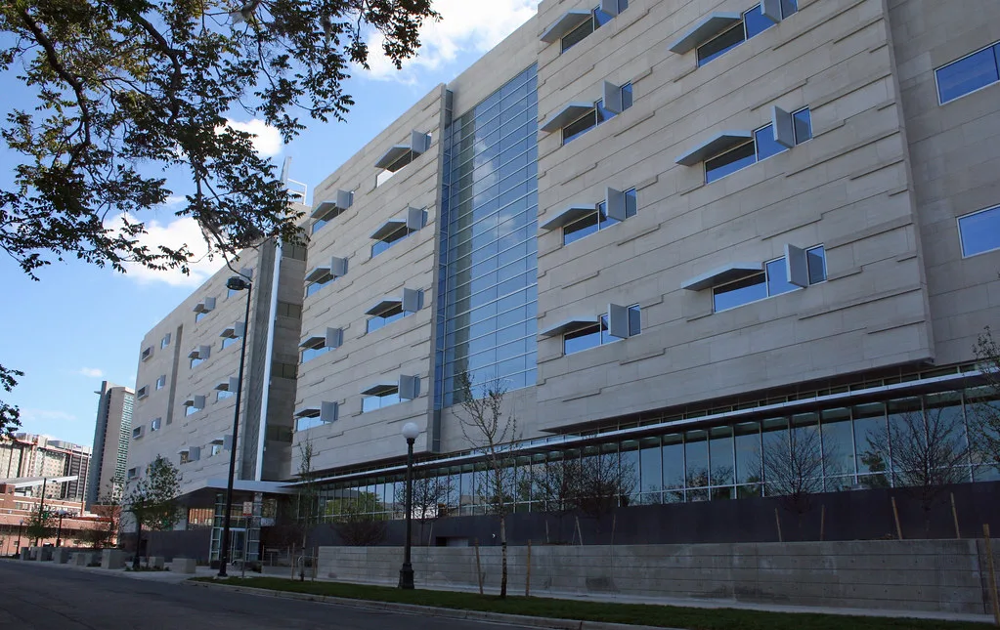

중수청 초대 청장 후보 김지용, 여권 강경파 반발에 '운명의 검증대'
오는 10월 2일 출범을 앞둔 중대범죄수사청(중수청)의 초대 청장 후보로 검사 출신 김지용 변호사가 지명된 가운데, 범여권 내부의 반발이 좀처럼 가라앉지 않고 있다. 검찰의 직접 수사권을 넘겨받는 새 수사기관의 첫 수장을 둘러싸고 여권 강경파와 조국혁신당 일부가 반대 목소리를 내면서, 출범 일정이 임박한 시점까지도 인선을 둘러싼 잡음이 이어지는 모양새다. 중수청은 검찰 개혁의 상징적 결과물로 추진돼 온 만큼, 첫 수장 인선이 순탄치 않다는 사실 자체가 정치권 안팎에 적지 않은 파장을 낳고 있다.
반대 측이 문제 삼는 핵심은 김 후보자가 검사 시절 이른바 '검수완박', 즉 검찰 수사권의 완전한 박탈에 반대하는 입장을 밝힌 전력이다. 검찰의 직접 수사권을 축소하고 별도 수사기관을 신설하는 것이 이번 정부 사법개혁의 핵심 기조인 만큼, 과거 이런 흐름에 반대했던 인사가 새 수사기관의 초대 청장을 맡는 것 자체가 모순이라는 게 강경파의 논리다. 일부 의원들은 인선을 재고하지 않을 경우 국회 차원의 인사청문 절차에서 강하게 문제를 제기하겠다는 뜻도 내비친 것으로 전해진다.

구체적으로는 김 후보자가 검사 재직 시절 지휘라인에 있었던 것으로 알려진 두 사건이 거론된다. 김학의 전 법무부 차관의 불법 출국금지 의혹 사건과, 이 사건 수사 과정에서 불거진 정진웅 전 검사의 독직폭행 사건이다. 반대 측은 이들 사건 처리 과정에서 김 후보자가 검찰 조직의 이해관계를 우선시하는 태도를 보였다고 주장하며, 새 수사기관의 중립성과 신뢰도에 의문을 제기하고 있다.
이에 대해 김 후보자 측은 정면으로 반박하고 나섰다. 채널A 사건과 김건희 여사의 모친 최은순씨 사건, 그리고 논란이 된 김학의 전 차관 관련 사건 처리에 자신이 직접 관여하지 않았거나 오히려 수사나 기소에 반대하는 입장을 냈다고 강조했다. 아울러 자신이 윤석열 정부 시절 오히려 좌천성 인사를 겪었다며 '친윤' 검사라는 꼬리표는 사실과 다르다고 선을 그었다.
김 후보자는 이런 논란 속에서도 수사와 기소를 분리하는 검찰 개혁의 원칙 자체에는 공감한다는 입장을 밝히며 진화에 나서고 있다. 중수청이 조기에 안착해 공정성과 중립성을 갖춘 수사기관으로 자리 잡도록 최선을 다하겠다는 뜻도 함께 전한 것으로 알려졌다. 정부 역시 인선 강행 방침을 유지하며 김 후보자에 대한 방어에 힘을 싣는 분위기지만, 여권 내부 이견이 완전히 해소되지는 않은 상태다.
중수청 출범이 코앞으로 다가온 만큼, 이번 주가 김 후보자에 대한 검증의 분수령이 될 것이라는 전망이 나온다. 새 수사기관이 출범과 동시에 수장 인선을 둘러싼 정치적 갈등을 완전히 떨쳐내지 못한 채 업무를 시작할 가능성도 배제할 수 없어, 향후 여야 및 범여권 내부의 논의 추이에 관심이 쏠리고 있다. 야당인 국민의힘 역시 이번 인선을 정부·여당의 사법개혁 일관성 문제로 규정하며 공세 수위를 높일 태세여서, 국회 차원의 논쟁도 한동안 이어질 것으로 보인다.
중수청은 검찰이 맡아온 부패·경제·선거 등 중대범죄 수사권을 넘겨받는 기관으로, 향후 수년간 한국 형사사법 체계의 무게중심을 좌우할 조직으로 평가받는다. 그런 만큼 초대 청장의 정치적 중립성과 수사 전문성을 둘러싼 검증은 단순한 인사 논란을 넘어, 새 수사기관에 대한 국민적 신뢰를 좌우할 시험대가 될 것이라는 분석이 나온다.